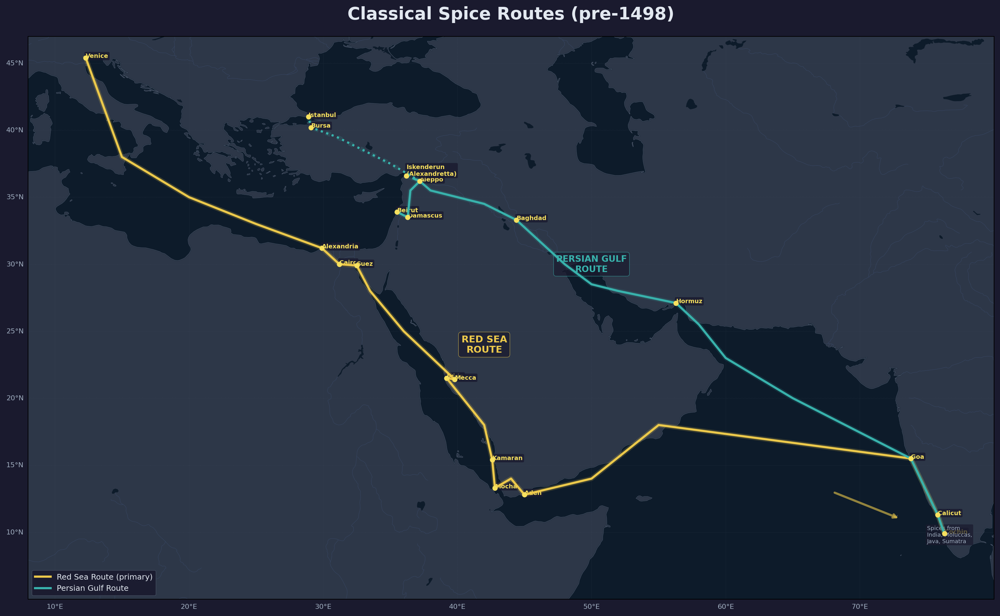
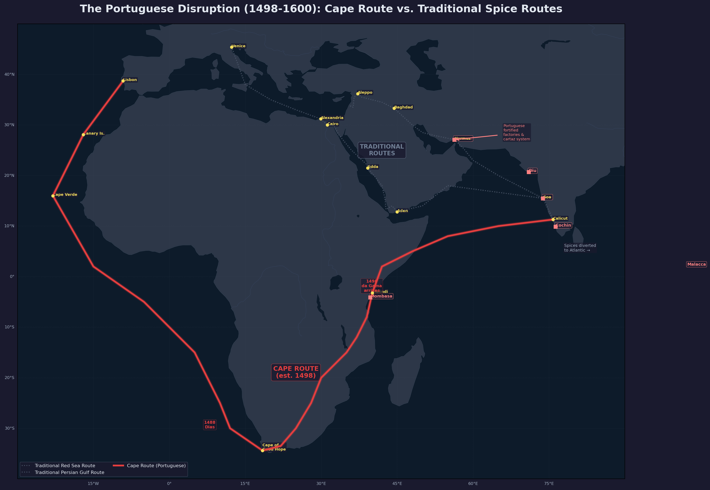
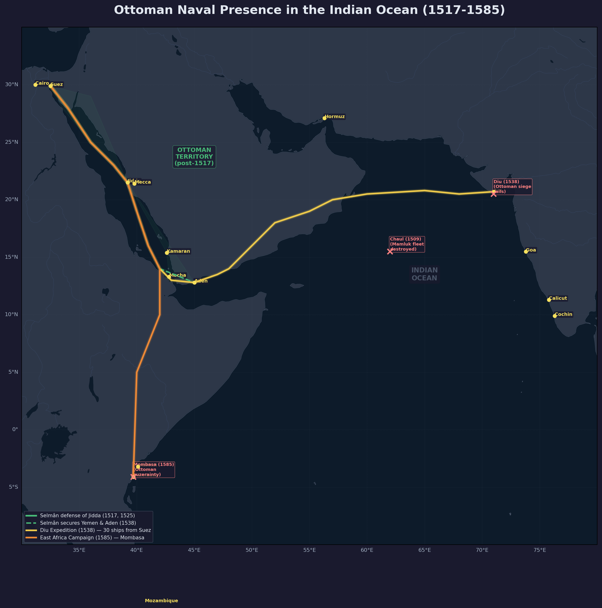

Spice Routes Under the Ottoman Empire

The two principal arteries of the eastern spice trade before the Portuguese discovery of the Cape route. Gold: Red Sea route (Cochin/Calicut → Aden → Jidda → Suez → Cairo → Alexandria → Venice). Teal: Persian Gulf route (Cochin → Hormuz → Baghdad → Aleppo/Damascus → Mediterranean).
The Traditional Spice Route
Before the Portuguese discovery of the sea route around Africa, the spice trade between Asia and Europe flowed through two principal arteries of the Islamic world: the Red Sea route from India to Egypt and Syria, and the Persian Gulf route through Baghdad to the Mediterranean. Of these, the Red Sea route — known in Ottoman Turkish as Bahâr-ı Hind (India Spice Route) — was the most important. Spices from India, the Moluccas, Java, and Sumatra were carried by Indian and Arab merchant vessels across the Indian Ocean to the port of Aden at the mouth of the Red Sea. From there they were shipped northward to Jidda, the seaport of Mecca, or to the Yemeni ports of Mocha and Kamaran. At Jidda the cargoes were offloaded onto smaller vessels or loaded onto camel caravans for the journey across the desert to Cairo.
The classical itinerary was: Alexandria — Cairo — Suez — Jidda — Aden — Indian Ocean. European merchants, above all the Venetians, purchased their spices in Alexandria and Cairo, whence the goods had travelled up the Nile from the Red Sea ports. Every year some twenty ships, laden with spices, arrived at Jidda alone. Ottoman pilgrims returning from Mecca carried spices, dyes, and Indian cloth back with them, supplementing the organised commercial traffic.
Alexandria and Cairo as Spice Entrepôts
Alexandria was the great Mediterranean terminus of the spice trade. In 1554 the Venetians alone bought six thousand quintals of spices in Alexandria, and their annual purchase of twelve thousand quintals between 1560 and 1564 matched the volume of trade before Vasco da Gama’s discovery of the sea route to India. Cairo functioned as the inland clearing-house: spices arriving from Jidda via the Red Sea port of Suez were transported by caravan across the desert to Cairo, where they were stored, taxed, and re-exported either to Alexandria for European buyers or overland to Syria and Asia Minor.
Bursa, the early Ottoman capital, also remained a major spice market for another century after Istanbul became the capital. In 1487 annual customs receipts from saffron, gumlac, and pepper imported into Bursa reached about two thousand gold ducats. Florentine and Genoese merchants came to Bursa to buy spices. A wealthy Damascene merchant named Abû Bakr sold a single shipment of spices worth four thousand gold ducats in Bursa in 1500. The Bursa customs register of 1545 shows European merchants actively buying spices there, and by 1582 customs receipts on spices in Bursa had reached 7,250 gold ducats — four times what they had been in 1487.
The Ottoman Conquest of Egypt (1517) and Its Impact
The conquest of the Mamlûk Sultanate by Selîm I in 1516–17 brought Syria, Egypt, and the Hejaz under Ottoman control. This was a watershed for the spice trade. The Ottomans now held both termini of the eastern spice routes — the Red Sea ports and the Mediterranean emporia — and could regulate the flow of spices from India to Europe. The immediate strategic impetus was defensive: in 1509 the Portuguese had destroyed a Mamlûk fleet at Chaul, and the Mamlûk ruler had turned to the Ottomans for assistance. The Ottomans sent matériel and craftsmen to Suez to build ships. In 1517, while still in Cairo, Selîm I ordered the construction of a fleet at Suez to drive the Portuguese out of the Indian Ocean.
The conquest gave the Ottomans control over the customs revenues of Egypt and Syria, which together provided one-third of the entire imperial budget income in 1528. The Egyptian budget alone remitted half a million gold ducats annually to the imperial Treasury in Istanbul. Spices, sugar, and drugs for the Palace cost 13,866 ducats in 1532 — a sign of how deeply the spice trade was woven into the fabric of Ottoman state finance and court consumption.
Ottoman Customs and the Taxation of Spice
The Ottoman state extracted revenue from the spice trade through a layered system of customs duties levied at every major entrepôt: Alexandria, Cairo, Damascus, Aleppo, Bursa, and Istanbul. In 1562 customs levied at Damascus on spices brought by the pilgrim caravans rose to 110,000 gold ducats. European merchants bought spices at Damascus and exported them through Beirut, while large portions of the cargo were forwarded to Bursa and Istanbul and thence to the Balkans and beyond.
But the Ottoman customs regime was not merely extractive: it also shaped the geography of the trade. The high duties — which the English later complained made pepper prices in Ottoman ports three times as high as in directly-purchased Atlantic routes — reflected the Ottoman understanding of the empire as the gatekeeper of East-West commerce. The mukâta’a (tax-farming) system was widely applied to customs collections, and the rapacity of customs officials was noted by contemporaries. The Ottoman historian Âlî attributed the decline in the number of ships arriving in the Red Sea from India — a drop from twenty ships per year to three or four — primarily to the corruption and overreach of customs officials.
The Portuguese Diversion and Its Devastating Impact

The Cape Route (red) bypassing the traditional eastern routes (grey), with Portuguese fortified factories (red squares). Key milestones: Dias rounds the Cape (1488), da Gama arrives in Calicut (1498).
The Portuguese discovery of the sea route around the Cape of Good Hope, culminating in Vasco da Gama’s arrival at Calicut in 1498, was the single greatest disruption to the eastern spice trade since the rise of Islam. The Portuguese established a system of cartaz (naval passes) and fortified factories at Hormuz, Goa, Cochin, and Malacca, systematically interdicting Muslim shipping in the Indian Ocean and diverting the flow of spices around Africa to Lisbon.
By 1501 the Portuguese had already begun to transport spices directly from India to Europe. The official price of pepper in Edirne in 1501 was eighteen gold ducats a kantâr (about 56 kg), but in Pera the price could spike to twenty-seven gold ducats when new supplies failed to arrive — a direct consequence of Portuguese disruption of the traditional routes.
The impact on Ottoman customs revenues was severe. The spice trade through the Red Sea — which had furnished a major portion of Egyptian and Syrian customs income — contracted dramatically. Where twenty ships had arrived annually at Jidda from India, by the early seventeenth century only three or four came. The Ottoman treasury lost the customs revenue that had been one of the pillars of Egyptian fiscal surplus. The transit trade of spices through Bursa declined as the Portuguese undercut the eastern route prices in European markets.
Yet the damage was not immediate. The Portuguese failed, despite all their efforts, to sever the trade routes entirely. Throughout the sixteenth century spices continued to flow through the Red Sea and the Persian Gulf, and the Levantine trade proved remarkably resilient.
The Competition Between Venice and Portugal
The rivalry between Venice and Portugal for the spice trade defined the commercial politics of the sixteenth century. Venice had been the principal European distributor of eastern spices for centuries, buying in Alexandria and Cairo and selling throughout Europe. The Portuguese crown, by contrast, sought to monopolise the Atlantic route, selling spices in Antwerp and northern Europe at prices that undercut the Venetian supply.
The competition was fierce and closely balanced. In 1554 the Venetians bought six thousand quintals of spices in Alexandria, and between 1560 and 1564 their annual purchases of twelve thousand quintals matched pre-da Gama volumes. The Lisbon market underwent periodic crises as a result: in 1564 a Portuguese spy in Egypt informed his government that thirty thousand quintals of spices had arrived in Alexandria — a volume that threatened to collapse the Portuguese monopoly price. The fact that Venice could still obtain such quantities through Ottoman ports demonstrates that the Ottoman spice routes were far from moribund in the mid-sixteenth century.
Venetian merchants brought cloth to Istanbul and bought spices there as late as 1590. The Hungarian trade offers a telling illustration: in 1547 a Hungarian merchant brought kersey (a coarse woollen cloth) to Bursa and purchased 110 kantârs of spices, but by the mid-sixteenth century Hungary had begun to receive spices from the west — a sign that the Portuguese route was gradually displacing the eastern supply even in territories adjacent to the Ottoman Empire.
Attempts to Redirect Trade Through the Red Sea

Ottoman naval campaigns in the Indian Ocean: Selmân’s defense of Jidda and securing of Aden (1517-1538, green), the failed Diu expedition (1538, gold), and the East Africa campaign reaching Mombasa (1585, orange).
The Ottomans did not passively accept the Portuguese disruption of the spice trade. Under Selîm I and Süleymân I, the Ottoman state mounted a sustained naval campaign to challenge Portuguese dominance in the Indian Ocean and reassert control over the spice routes.
The Ottoman admiral Selmân repulsed Portuguese attacks on Jidda in 1517 and 1525, then advanced on Yemen and Aden, securing the southern approaches to the Red Sea. In 1538 the Ottomans sent a fleet of thirty ships from Suez to expel the Portuguese from Diu in northern India. The expedition failed — the local Muslim ruler of Gujarat, fearing Ottoman conquest rather than liberation, refused to cooperate — but the Ottomans successfully subjugated Yemen and Aden in the same period. By the 1550s the Ottomans controlled the entire Red Sea coastline and the Yemeni ports that commanded the sea route to India.
In the second half of the sixteenth century the Portuguese even permitted the sale of spices to the Near East in Hormuz, tacitly acknowledging that they could not completely sever the Red Sea and Persian Gulf routes. The Ottomans maintained a fleet at Suez throughout the century, and as late as 1585 an Ottoman fleet sailed from Suez to capture Portuguese factories on the East African coast, with the Prince of Mombasa recognising Ottoman suzerainty. These successes did not last: the Spanish-Portuguese Union under Philip II (1580) brought renewed naval pressure, and the Ottoman African project ended in failure.
After 1600 the Dutch and English, with superior ships and organisational capacity, came to dominate the Indian Ocean. By 1613 Dutch and English pirates were operating on the Red Sea itself. The English East India Company, founded in 1600, preferred to buy spices directly from India rather than through Ottoman intermediaries, since customs duties levied in Ottoman ports meant that pepper prices were three times as high in Near Eastern ports. From 1614 the English began to sell pepper from Java and Sumatra directly in Ottoman ports — a sign that the traditional direction of trade had reversed. Eventually none of the Indian trade with the West passed through the Near East.
Long-Term Economic Effects
The long-term economic effects of the Portuguese diversion of the spice trade were profound and cumulative. The Ottoman Empire lost control of the most lucrative branch of Eurasian commerce, and with it the customs revenues that had enriched the Egyptian and Syrian treasuries. The mukâta’a contracts for spice customs, which had generated tens of thousands of gold ducats annually, shrank to insignificance. The decline in shipping in the Red Sea — from twenty ships annually to three or four — reflected not just Portuguese interdiction but the structural shift of the world’s most valuable trade to the Atlantic.
The loss of the spice route’s customs revenues contributed to the broader fiscal crisis of the late sixteenth and early seventeenth centuries. Egypt and Syria, which had provided one-third of the imperial budget in 1528, could no longer sustain that proportion. The Ottoman treasury became increasingly dependent on other revenue sources — the cizye (poll tax on non-Muslims), the avariz (emergency levies), and the manipulation of the coinage — all of which had distorting effects on the economy.
The diversion of Indian Ocean trade to the Atlantic also isolated the Ottoman Empire commercially. Where Bursa, Aleppo, and Cairo had once been central nodes in a global network of exchange — connecting India, Iran, Anatolia, and Europe — they became regional markets serving a contracting imperial economy. The rise of the Atlantic powers (Portugal, then the Dutch Republic and England) displaced the Ottoman Empire from the commercial revolution that would transform the world economy in the seventeenth and eighteenth centuries.
The spice trade’s decline was not, however, a simple story of Ottoman passivity. Inalcik shows that the Ottoman spice routes remained active throughout the sixteenth century, sustained by Venetian demand, the resilience of Muslim merchant networks, and periodic Ottoman naval offensives. The decline was gradual, contested, and intimately connected to the broader story of Ottoman naval power, fiscal administration, and commercial policy. By the early seventeenth century, however, the combination of Portuguese, Dutch, and English maritime supremacy had decisively shifted the centre of gravity of the Eurasian spice trade from the Red Sea and the Persian Gulf to the Cape of Good Hope and the Atlantic. The Ottoman Empire, which had once stood at the crossroads of the world’s most valuable trade, found itself on the margins of the new commercial order.